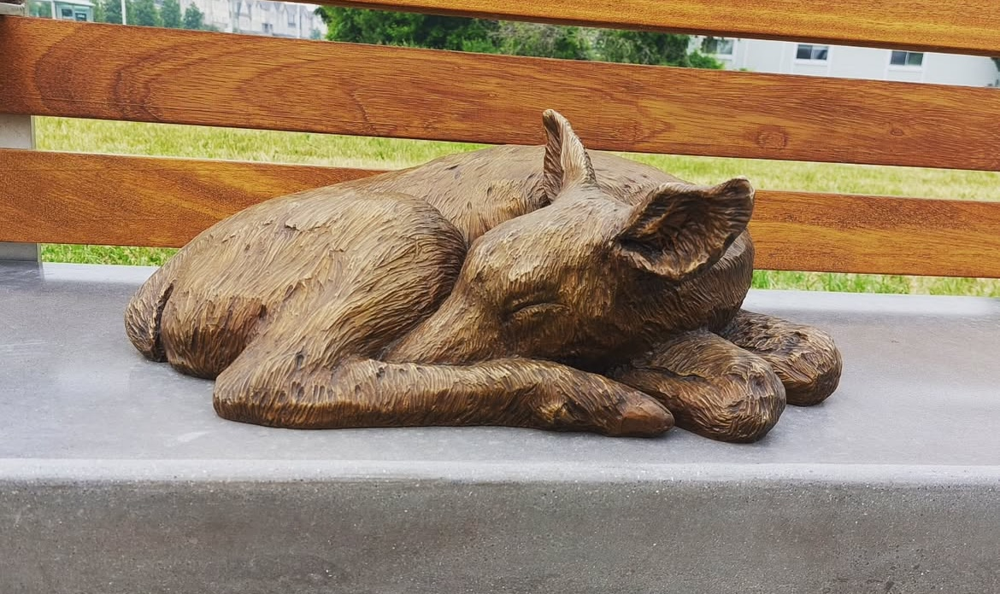
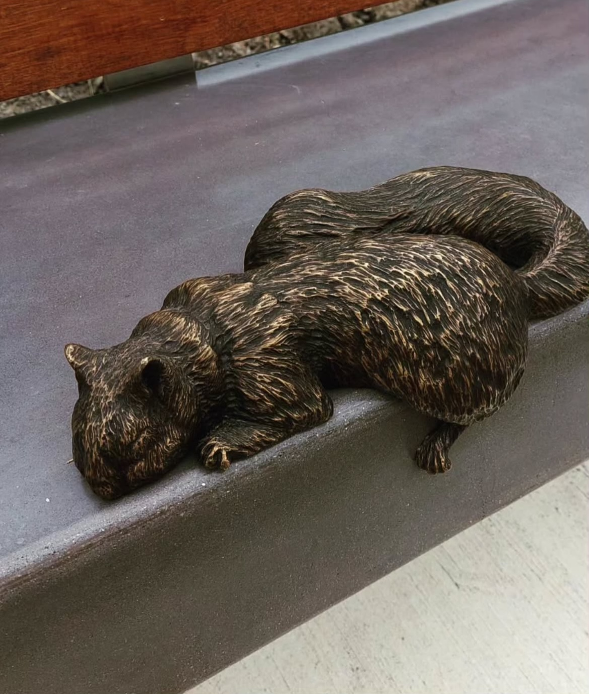
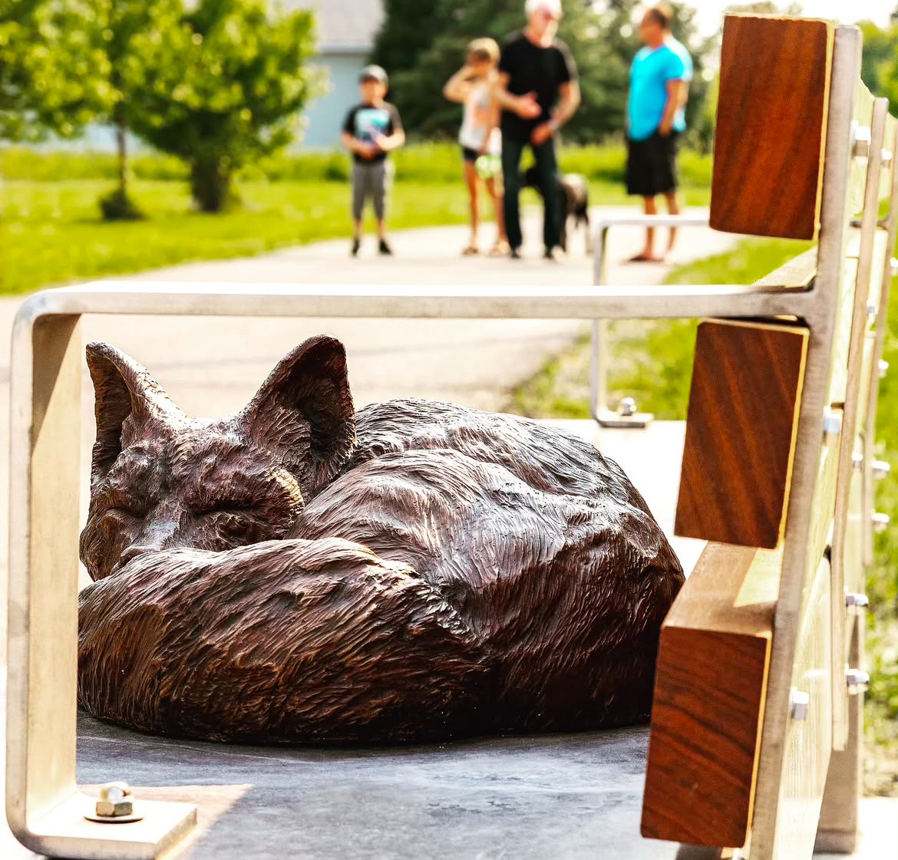
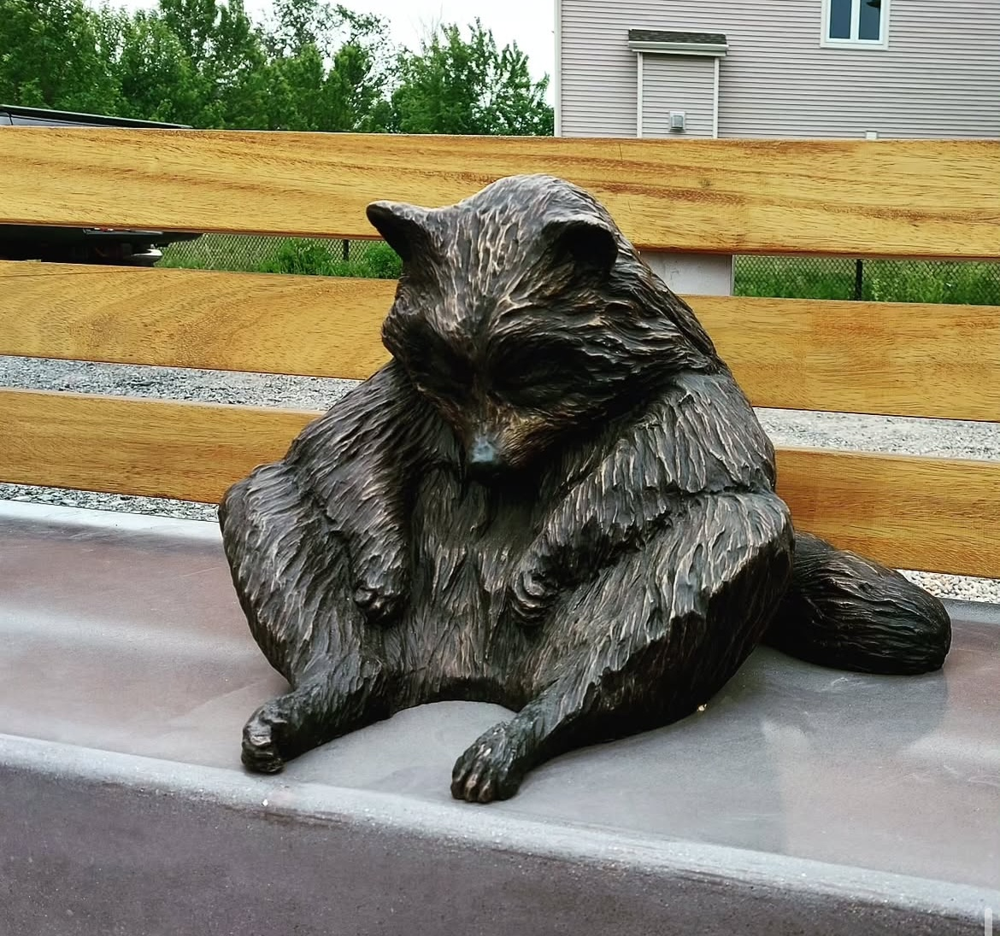
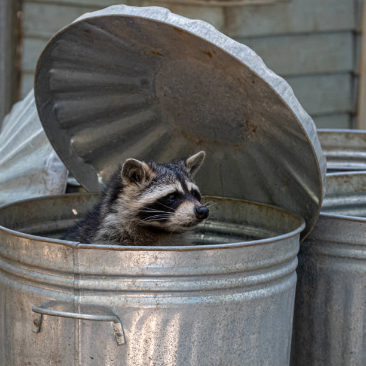
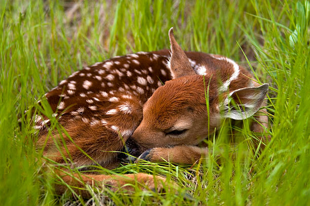

Among the four sculptures in A State of Rest, the placement of the raccoon stands out for its deliberate spatial separation. While the fox, foal, and squirrel are situated together along a pedestrian path adjacent to Strandherd Drive—visible, accessible, and in close dialogue with the urban environment—the raccoon rests alone, positioned across the street and at a considerable distance from the others. Reaching it requires a ten-minute walk, removing it from the immediate experience of the main installation.




The separation of the raccoon is not arbitrary. Instead, it introduces a conceptual rupture that aligns with the broader themes of the work. The raccoon’s isolation draws attention to the fragmentation of natural habitats caused by urban development. Roads, buildings, and infrastructure create invisible yet significant barriers within ecosystems, dividing populations and disrupting natural patterns of movement. The sculpture’s placement mirrors this reality, using physical distance to echo the ecological and spatial disconnection brought about by city expansion.
Outsiders in the urban landscape

A raccoon rummaging through a trash can—a common yet loaded image that reflects the way certain urban animals are viewed as nuisances rather than cohabitants. This perception underscores the marginalization of adaptable species within human-dominated environments

A sleeping baby deer—an image often associated with innocence, beauty, and serenity. In contrast to the raccoon, animals like the deer are readily embraced in cultural narratives, highlighting how aesthetic appeal influences which creatures are welcomed into shared urban spaces.
Symbolically, the raccoon may also represent the animals most frequently marginalized or overlooked in urban environments. Despite their adaptability, such creatures are often seen as pests or intruders: present, yet peripheral. By situating the raccoon outside the main cluster, the installation subtly questions who is welcomed into shared spaces and who is excluded.
Disrupted Proximity
This spatial decision encourages viewers to reflect on the uneven terms of coexistence between humans and wildlife. It also alters the mode of engagement: encountering the raccoon requires effort and intention, inviting a more active form of interaction with the work. In this way, A State of Rest not only depicts a moment of pause but also disrupts the expectation of passive observation, prompting reflection on the distances, both literal and symbolic, that shape our relationship with the natural world.